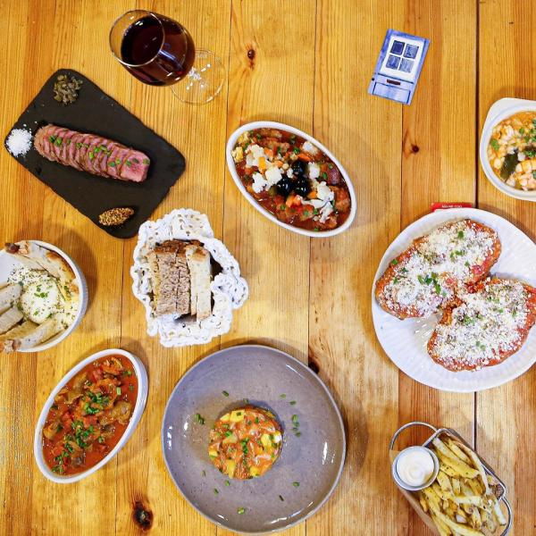

O QUINTAL / GALERIA
Um olhar.
Muitos sabores.
Entre na nossa casa e descubra alguns dos pratos que dão vida à mesa do Quintal.
 Ampliar
AmpliarA nossa sala


AmpliarSabores para partilhar
 Ampliar
AmpliarEstaladiços de alheira
 Ampliar
AmpliarOvos rotos
 Ampliar
AmpliarBruschetta com tomate e parmesão
 Ampliar
AmpliarSalmão grelhado
 Ampliar
AmpliarPolvo com grelos e batata-doce
 Ampliar
AmpliarBife do lombo à portuguesa
 Ampliar
AmpliarRisotto de cogumelos
 Ampliar
AmpliarMousse de chocolate
 Ampliar
AmpliarBolo de chocolate cremoso
 Ampliar
AmpliarCheesecake
A MELHOR PARTE É ESTAR JUNTO